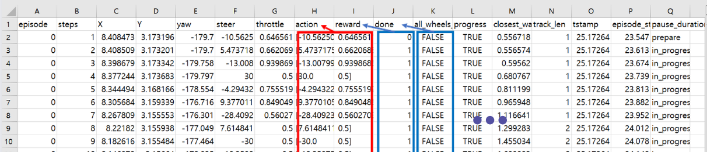
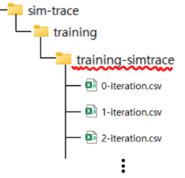

iteration csv 파일 다루기
Contents
iteration csv 파일 다루기#
iteration.csv 파일 불러오기 및 전처리 코드#
csv 특성상 콤마(,)를 기준으로 열을 구분하기 때문에 그냥 불러오면 아래와 같이 데이터가 밀릴 수 있습니다. 따라서 전처리 과정이 필요합니다. 
우선, 아래와 같이
n-iteration.csv파일 들이 담겨있는 폴더 경로를 찾아서 복사합니다. 
전처리 예시
# iteration.csv 파일이 존재하는 폴더 경로 지정
simtrace_path = "iteration.csv 파일이 존재하는 폴더 경로"
# 라이브러리 import
import os
import pandas as pd
# 파일 목록 가져오기
file_list = os.listdir(simtrace_path)
# 전처리한 데이터 프레임을 담을 리스트
df_list = []
# 전처리
for target_file in file_list :
target_iteration = int(target_file.split('-')[0])
target_path = os.path.join(simtrace_path, target_file)
with open(target_path) as f :
csv_readlines = f.readlines()
columns = ['iteration'] + csv_readlines[0].replace('\n','').split(',')
data = []
for line_text in csv_readlines[1:] :
row = eval('[' + line_text.replace('\n','').replace('prepare', "'prepare'").replace('in_progress', "'in_progress'").replace('off_track', "'off_track'").replace('crashed',"'off_track'") + ']')
data.append([target_iteration] + row)
df_target = pd.DataFrame(columns = columns, data = data)
df_list.append(df_target)
# 전처리 된 데이터프레임 병합
df_final = pd.concat(df_list).reset_index(drop=True)
df_final
주요 변수 설명#
iteration : episode의 집합.
episode : step 의 집합
step : episode 의 순서
X : 차량의 x좌표
Y : 차량의 y좌표
yaw : 차량의 정면 각도 ( = heading)
steer : 차량 핸들 각도
throttle : 차량 속도 ( = speed)
action : 행동
이산공간의 경우 행동의 index 가 표시되고 연속공간의 경우 차량의 핸들 각도와 속도가 각각 action_1, action_2 로 나누어 표시됨
reward : 현재 step 에서 받은 보상
all_wheels_on_track : 차량의 네 바퀴가 트랙 안에 위치하는지 여부
progress : 현재 Epiosde 에서 완주율
closest_waypoint : 가장 가까운 waypoint
tstamp : 훈련이 진행된 총 시간
실습#
로그 데이터 셈플#
Race_Type |
Action_Space |
Track |
file_link |
|---|---|---|---|
Time Trial |
continuous |
reinvent2019 |
|
Time Trial |
discrete |
reinvent2019 |
|
Object Avoidance |
continuous |
reinvent2019 |
|
Object Avoidance |
discrete |
reinvent2019 |
|
Head to Head |
continuous |
reinvent2019 |
|
Head to Head |
discrete |
reinvent2019 |
전체 다운받기 : logs-all.zip
colab 마운트#
from google.colab import drive
drive.mount("./gdrive")
---------------------------------------------------------------------------
ModuleNotFoundError Traceback (most recent call last)
Cell In[1], line 1
----> 1 from google.colab import drive
3 drive.mount("./gdrive")
ModuleNotFoundError: No module named 'google.colab'
(실습 1) logs-TT-continuous#
# iteration.csv 파일이 존재하는 폴더 경로 지정
simtrace_path = "/content/gdrive/MyDrive/deepracer-lecture-open-data/download_logs_sample/logs-TT-continuous/sim-trace/training/training-simtrace"
# 라이브러리 import
import os
import pandas as pd
# 파일 목록 가져오기
file_list = os.listdir(simtrace_path)
# 전처리한 데이터 프레임을 담을 리스트
df_list = []
# 전처리
for target_file in file_list :
target_iteration = int(target_file.split('-')[0])
target_path = os.path.join(simtrace_path, target_file)
with open(target_path) as f :
csv_readlines = f.readlines()
columns = ['iteration'] + csv_readlines[0].replace('\n','').split(',')
data = []
for line_text in csv_readlines[1:] :
row = eval('[' + line_text.replace('\n','').replace('prepare', "'prepare'").replace('in_progress', "'in_progress'").replace('off_track', "'off_track'").replace('crashed',"'off_track'") + ']')
data.append([target_iteration] + row)
df_target = pd.DataFrame(columns = columns, data = data)
df_list.append(df_target)
# 전처리 된 데이터프레임 병합
df_final = pd.concat(df_list).reset_index(drop=True)
df_final
| iteration | episode | steps | X | Y | yaw | steer | throttle | action | reward | done | all_wheels_on_track | progress | closest_waypoint | track_len | tstamp | episode_status | pause_duration | |
|---|---|---|---|---|---|---|---|---|---|---|---|---|---|---|---|---|---|---|
| 0 | 0 | 0 | 1.0 | 0.322517 | 2.691220 | -84.005984 | -30.000000 | 1.000000 | [-30.0, 1.0] | 0.000 | False | True | 0.606251 | 1 | 23.118222 | 23.374 | prepare | 0.0 |
| 1 | 0 | 0 | 2.0 | 0.322497 | 2.691373 | -84.006075 | -30.000000 | 0.784473 | [-30.0, 0.7844727679611428] | 1.000 | False | True | 0.605583 | 1 | 23.118222 | 23.440 | in_progress | 0.0 |
| 2 | 0 | 0 | 3.0 | 0.319572 | 2.678847 | -85.027137 | -10.536257 | 0.588895 | [-10.536256828073078, 0.5888954477708513] | 1.000 | False | True | 0.657471 | 1 | 23.118222 | 23.499 | in_progress | 0.0 |
| 3 | 0 | 0 | 4.0 | 0.312488 | 2.659821 | -87.260787 | 24.231568 | 0.500000 | [24.231567735164617, 0.5] | 1.000 | False | True | 0.734625 | 1 | 23.118222 | 23.574 | in_progress | 0.0 |
| 4 | 0 | 0 | 5.0 | 0.316719 | 2.633208 | -86.645489 | -22.579592 | 0.663647 | [-22.579592254845238, 0.6636468022947859] | 1.000 | False | True | 0.851172 | 1 | 23.118222 | 23.638 | in_progress | 0.0 |
| ... | ... | ... | ... | ... | ... | ... | ... | ... | ... | ... | ... | ... | ... | ... | ... | ... | ... | ... |
| 3250 | 2 | 59 | 168.0 | 7.237886 | 1.131095 | 20.460835 | -5.609134 | 0.901326 | [-5.609133698222017, 0.9013260732040003] | 0.001 | False | False | 41.477307 | 57 | 23.118222 | 275.702 | in_progress | 0.0 |
| 3251 | 2 | 59 | 169.0 | 7.290502 | 1.152754 | 20.850336 | -7.973791 | 1.000000 | [-7.973791102262979, 1.0] | 0.001 | False | False | 41.635570 | 57 | 23.118222 | 275.768 | in_progress | 0.0 |
| 3252 | 2 | 59 | 170.0 | 7.350248 | 1.173194 | 20.355409 | -8.208197 | 0.624271 | [-8.208196500022996, 0.6242709462324019] | 0.001 | False | False | 41.865668 | 57 | 23.118222 | 275.839 | in_progress | 0.0 |
| 3253 | 2 | 59 | 171.0 | 7.407519 | 1.190892 | 19.630001 | -12.337266 | 0.659029 | [-12.33726560992902, 0.659029347465123] | 0.001 | False | False | 42.079821 | 58 | 23.118222 | 275.900 | in_progress | 0.0 |
| 3254 | 2 | 59 | 172.0 | 7.465689 | 1.207724 | 18.787307 | -20.420495 | 0.723259 | [-20.42049466339495, 0.7232594594107887] | 0.001 | True | False | 42.244357 | 58 | 23.118222 | 275.967 | off_track | 0.0 |
3255 rows × 18 columns
(실습 2) logs-TT-discrete#
# iteration.csv 파일이 존재하는 폴더 경로 지정
simtrace_path = "/content/gdrive/MyDrive/deepracer-lecture-open-data/download_logs_sample/logs-TT-discrete/sim-trace/training/training-simtrace"
# 라이브러리 import
import os
import pandas as pd
# 파일 목록 가져오기
file_list = os.listdir(simtrace_path)
# 전처리한 데이터 프레임을 담을 리스트
df_list = []
# 전처리
for target_file in file_list :
target_iteration = int(target_file.split('-')[0])
target_path = os.path.join(simtrace_path, target_file)
with open(target_path) as f :
csv_readlines = f.readlines()
columns = ['iteration'] + csv_readlines[0].replace('\n','').split(',')
data = []
for line_text in csv_readlines[1:] :
row = eval('[' + line_text.replace('\n','').replace('prepare', "'prepare'").replace('in_progress', "'in_progress'").replace('off_track', "'off_track'").replace('crashed',"'off_track'") + ']')
data.append([target_iteration] + row)
df_target = pd.DataFrame(columns = columns, data = data)
df_list.append(df_target)
# 전처리 된 데이터프레임 병합
df_final = pd.concat(df_list).reset_index(drop=True)
df_final
| iteration | episode | steps | X | Y | yaw | steer | throttle | action | reward | done | all_wheels_on_track | progress | closest_waypoint | track_len | tstamp | episode_status | pause_duration | |
|---|---|---|---|---|---|---|---|---|---|---|---|---|---|---|---|---|---|---|
| 0 | 2 | 40 | 1.0 | 0.322507 | 2.691125 | -84.000174 | 15.0 | 1.0 | 7 | 0.000 | False | True | 0.606656 | 1 | 23.118222 | 263.260 | prepare | 0.0 |
| 1 | 2 | 40 | 2.0 | 0.322497 | 2.691373 | -84.006075 | 30.0 | 0.5 | 8 | 1.000 | False | True | 0.605583 | 1 | 23.118222 | 263.291 | in_progress | 0.0 |
| 2 | 2 | 40 | 3.0 | 0.324574 | 2.685322 | -83.697732 | 0.0 | 1.0 | 5 | 1.000 | False | True | 0.632553 | 1 | 23.118222 | 263.382 | in_progress | 0.0 |
| 3 | 2 | 40 | 4.0 | 0.328456 | 2.664824 | -83.382752 | 15.0 | 1.0 | 7 | 1.000 | False | True | 0.722943 | 1 | 23.118222 | 263.456 | in_progress | 0.0 |
| 4 | 2 | 40 | 5.0 | 0.330915 | 2.641789 | -83.440031 | 30.0 | 1.0 | 9 | 1.000 | False | True | 0.823087 | 1 | 23.118222 | 263.524 | in_progress | 0.0 |
| ... | ... | ... | ... | ... | ... | ... | ... | ... | ... | ... | ... | ... | ... | ... | ... | ... | ... | ... |
| 3082 | 0 | 19 | 29.0 | -0.347158 | 3.102314 | -140.954107 | -15.0 | 1.0 | 3 | 0.001 | False | False | 3.901550 | 152 | 23.118222 | 80.496 | in_progress | 0.0 |
| 3083 | 0 | 19 | 30.0 | -0.380709 | 3.072923 | -140.669880 | 0.0 | 0.5 | 4 | 0.001 | False | False | 4.032639 | 153 | 23.118222 | 80.596 | in_progress | 0.0 |
| 3084 | 0 | 19 | 31.0 | -0.413444 | 3.049650 | -141.351053 | 30.0 | 0.5 | 8 | 0.001 | False | False | 4.137175 | 153 | 23.118222 | 80.650 | in_progress | 0.0 |
| 3085 | 0 | 19 | 32.0 | -0.438021 | 3.024665 | -140.643719 | -15.0 | 0.5 | 2 | 0.001 | False | False | 4.248139 | 153 | 23.118222 | 80.720 | in_progress | 0.0 |
| 3086 | 0 | 19 | 33.0 | -0.463285 | 2.993263 | -138.687614 | 15.0 | 0.5 | 6 | 0.001 | True | False | 4.346403 | 153 | 23.118222 | 80.793 | off_track | 0.0 |
3087 rows × 18 columns
(실습 3) logs-OA-continuous#
# iteration.csv 파일이 존재하는 폴더 경로 지정
simtrace_path = "/content/gdrive/MyDrive/deepracer-lecture-open-data/download_logs_sample/logs-OA-continuous/sim-trace/training/training-simtrace"
# 라이브러리 import
import os
import pandas as pd
# 파일 목록 가져오기
file_list = os.listdir(simtrace_path)
# 전처리한 데이터 프레임을 담을 리스트
df_list = []
# 전처리
for target_file in file_list :
target_iteration = int(target_file.split('-')[0])
target_path = os.path.join(simtrace_path, target_file)
with open(target_path) as f :
csv_readlines = f.readlines()
columns = ['iteration'] + csv_readlines[0].replace('\n','').split(',')
data = []
for line_text in csv_readlines[1:] :
row = eval('[' + line_text.replace('\n','').replace('prepare', "'prepare'").replace('in_progress', "'in_progress'").replace('off_track', "'off_track'").replace('crashed',"'off_track'") + ']')
data.append([target_iteration] + row)
df_target = pd.DataFrame(columns = columns, data = data)
df_list.append(df_target)
# 전처리 된 데이터프레임 병합
df_final = pd.concat(df_list).reset_index(drop=True)
df_final
| iteration | episode | steps | X | Y | yaw | steer | throttle | action | reward | done | all_wheels_on_track | progress | closest_waypoint | track_len | tstamp | episode_status | pause_duration | |
|---|---|---|---|---|---|---|---|---|---|---|---|---|---|---|---|---|---|---|
| 0 | 0 | 0 | 1.0 | 0.322513 | 2.691225 | -84.006397 | 20.684077 | 0.875259 | [20.68407682763616, 0.8752587687546034] | 0.000 | False | True | 0.606227 | 1 | 23.118222 | 25.280 | prepare | 0.0 |
| 1 | 0 | 0 | 2.0 | 0.322497 | 2.691373 | -84.006075 | 30.000000 | 0.618596 | [30.0, 0.6185960299640711] | 5.001 | False | True | 0.605583 | 1 | 23.118222 | 25.349 | in_progress | 0.0 |
| 2 | 0 | 0 | 3.0 | 0.326084 | 2.683312 | -83.384829 | 0.194598 | 1.000000 | [0.19459804670664838, 1.0] | 5.001 | False | True | 0.641881 | 1 | 23.118222 | 25.415 | in_progress | 0.0 |
| 3 | 0 | 0 | 4.0 | 0.337351 | 2.664769 | -81.130261 | 30.000000 | 0.637076 | [30.0, 0.6370756020036588] | 5.001 | False | True | 0.728602 | 1 | 23.118222 | 25.480 | in_progress | 0.0 |
| 4 | 0 | 0 | 5.0 | 0.354745 | 2.635282 | -78.115526 | 16.587501 | 0.500000 | [16.58750056401265, 0.5] | 5.001 | False | True | 0.865491 | 1 | 23.118222 | 25.544 | in_progress | 0.0 |
| ... | ... | ... | ... | ... | ... | ... | ... | ... | ... | ... | ... | ... | ... | ... | ... | ... | ... | ... |
| 3485 | 2 | 59 | 27.0 | -0.273467 | 2.937214 | -129.733517 | -30.000000 | 0.958484 | [-30.0, 0.9584840497542667] | 4.002 | False | False | 4.424177 | 153 | 23.118222 | 225.968 | in_progress | 0.0 |
| 3486 | 2 | 59 | 28.0 | -0.327351 | 2.896705 | -133.210847 | 26.223844 | 0.802901 | [26.223843556662068, 0.8029013199197002] | 4.002 | False | False | 4.588540 | 153 | 23.118222 | 226.029 | in_progress | 0.0 |
| 3487 | 2 | 59 | 29.0 | -0.377556 | 2.855187 | -135.088283 | -30.000000 | 0.529313 | [-30.0, 0.5293132074962505] | 4.002 | False | False | 4.757997 | 154 | 23.118222 | 226.099 | in_progress | 0.0 |
| 3488 | 2 | 59 | 30.0 | -0.419785 | 2.813709 | -135.169548 | -1.896201 | 1.000000 | [-1.8962011571345982, 1.0] | 4.002 | False | False | 4.928861 | 154 | 23.118222 | 226.164 | in_progress | 0.0 |
| 3489 | 2 | 59 | 31.0 | -0.465530 | 2.769014 | -135.315574 | 14.610955 | 1.000000 | [14.61095541112627, 1.0] | 4.002 | True | False | 5.000000 | 0 | 23.118222 | 226.220 | off_track | 0.0 |
3490 rows × 18 columns
한계점#
iteration.csv 파일에서 아쉽게도 여러 params의 정보들을 볼 수 없다.
확인이 안되는 params 요소 : waypoints, track_width, objects_location 등등
참고로 Track Waypoints 는 아래 링크를 통해 확인 가능하다.
다음 장에서 params에 있는 모든 요소들을 모두 print 하고 로그 기록들을 전처리하는 과정들을 살펴본다.